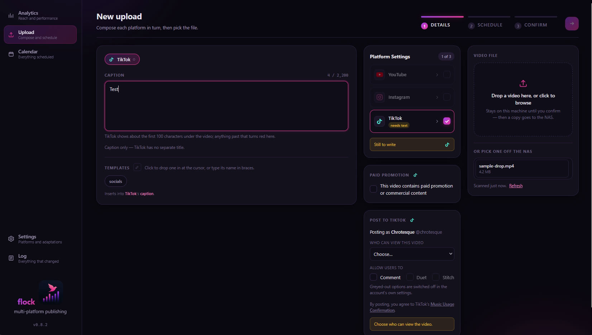
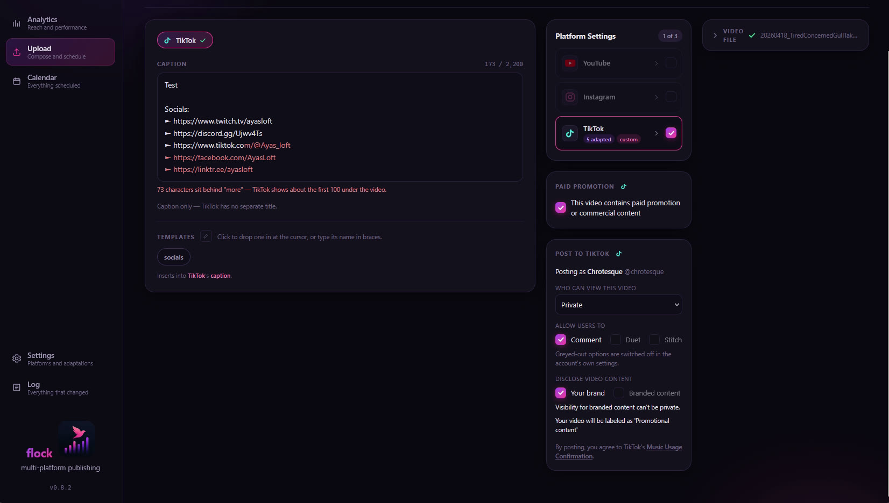
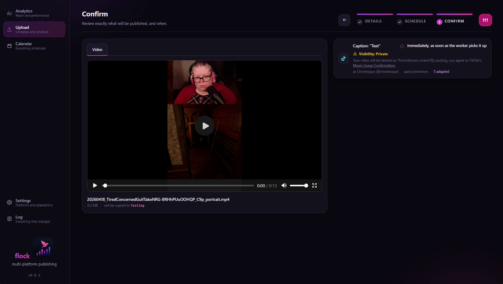
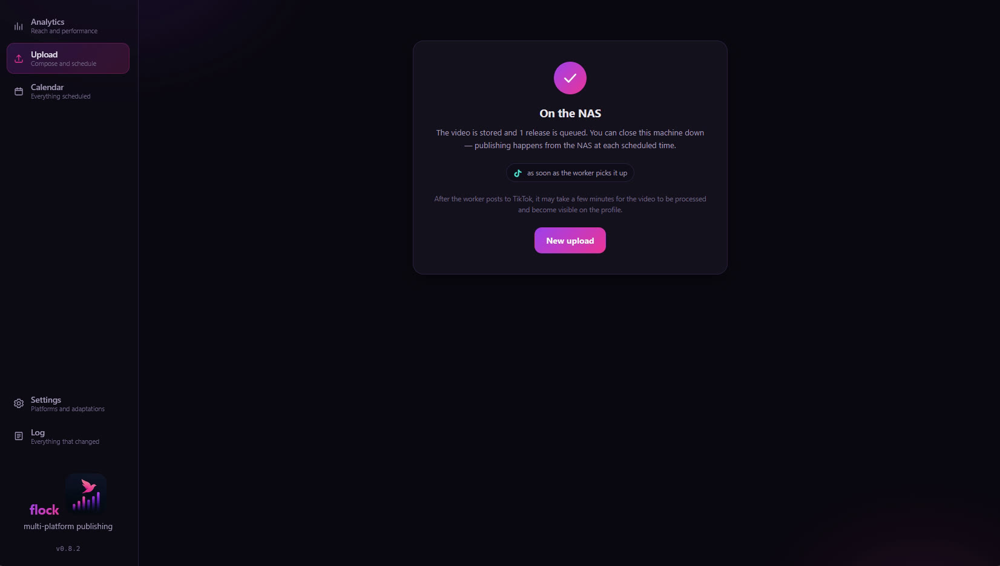

One video, every platform, each on its own schedule.
flock is a self-hosted publishing tool. You write the text for each platform separately, choose a video and a release time per platform, and a worker on your own storage publishes it to YouTube, TikTok and Instagram when the time comes.
What flock is
flock was written by one person for their own use. It runs on private hardware, a small database and a worker process on a NAS, and is reachable only on that person's own network. It is not offered as a service and has no accounts to sign up for. This site exists because YouTube API Services and TikTok's developer terms require every API client to publish what it does and how it handles data.
What it does
Every platform reads differently, so flock treats each one as its own post.
Text per platform
Titles, captions and tags are written separately for each platform, because a link or a hashtag style that works on one reads badly on another. Adaptation rules can rewrite text automatically before it is published.
A release time per platform
Each platform gets its own day and hour on a week grid. Drag a card to move it, type an exact time, or pick a saved pattern such as "Fridays at 21:00".
Publishing from the NAS
Confirming an upload only queues it. A worker beside the database publishes at the scheduled time, so the computer that composed the post can be switched off.
Posting to TikTok, TikTok's way
Audience, comments, duets, stitches and the commercial-content disclosure are chosen per post, from what the account offers, with nothing preselected.
Video from the browser or the NAS
A video can be uploaded through the browser, or picked from a watch folder on the NAS, which is how files above the browser's size limit are published.
Analytics and a log
Live counters for the newest videos on the YouTube channel, and a log of every change with the machine that made it.
The screens
An upload is three steps: compose, schedule, confirm.





Posting to TikTok
flock uses TikTok's Login Kit and the Content Posting API's Direct Post. The post screen follows TikTok's content sharing guidelines.
- Who posts is shown. The account's display name and handle, read from TikTok before every post.
- The audience is chosen per post. The list holds exactly the options TikTok reports for the account, and nothing is preselected.
- Interactions are off until switched on. Comments, Duet and Stitch start unticked, and are greyed out where the account has them disabled.
- Commercial content is disclosed. "Your brand" and "Branded content" can be declared, with TikTok's own note on how the post will be labelled. Branded content cannot be posted privately.
- The declaration is on every post. "By posting, you agree to TikTok's Music Usage Confirmation", with the Branded Content Policy added for branded content.
- The post is TikTok's to finish. The file is uploaded in chunks, the status is polled until TikTok reports the post published, and the notice says it may take a few minutes to appear.
Permissions requested: user.info.basic, to show which account a post goes to, and
video.publish, to post it. Nothing else is read from the account.

How it runs
There is no hosted service and nothing to log in to. flock is a static web app served by its own PocketBase instance, a worker process on the same machine, and the author's browser. Setting it up means installing Node and PocketBase, and connecting each platform once through that platform's consent page. The tokens stay in a configuration file on the author's hardware, and revoking access on the platform ends it.